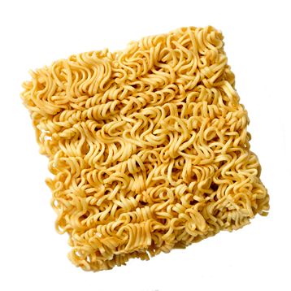

DINNER
Instant Noodles
Difficulty : ★★☆☆☆
Cook Time : 15 minutes
Ingredients :
• 1 x packet of instant Noodles
• Anything else you like to add to your
instant noodles
Directions :
Boil 500ml water in your preferred boiling
water holder. Once it has boiled, throw in the
seasoning packet and whatever additional
ingredient you have chosen and wait for them
to cook. Once they are cooked, throw in your instant
noodles for around 3-4 minutes depending on how
strong your noodles are.
